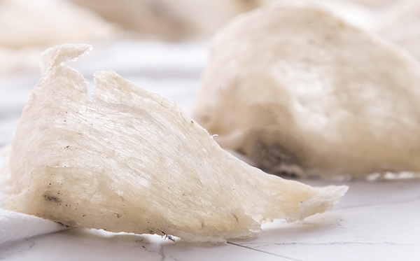
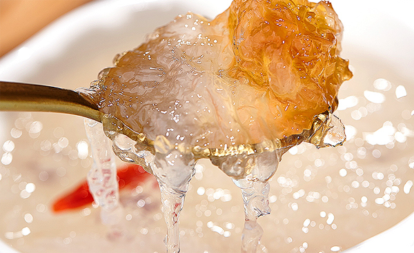
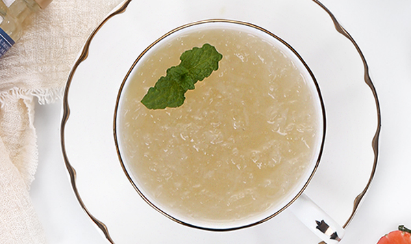

原文连接:https://www.daquan.com/post/12903.html
燕窝是由金丝燕用唾液筑成的窝，很多人都觉得燕窝只是燕子的唾液是不可能有营养的。但是燕窝中含有大量的氨基酸和蛋白质，含有大量的抗养活、抗衰老的成分。并且燕窝是中国从古至今一直有使用的滋补品，所以说燕窝是有营养的，但是燕窝的营养并没有像现在商家吹嘘的那么大。
燕窝有营养
1、 燕窝含有营养

燕窝现在研究确定里面含有多种氨基酸和丰富的蛋白质是营养成分非常高的滋补品。虽然燕窝是很好的滋补品但是燕窝的营养是有限的，并且人体吸收燕窝也是有限的。燕窝在制作和饮食时间不同，能够吸收的营养和营养的残留都是不同的，所以燕窝是含有营养的但是并不是像现在宣传的那样是人体最好的营养品。
2、 燕窝能够抗衰老

燕窝能够抗衰老这是因为燕窝中含有抗氧化的成分，人体身体感觉疲惫都是衰老的一种表现，燕窝能够缓解疲惫。但是燕窝只是能够缓解疲惫和缓解衰老，并不能阻止不老。衰老是人体的正常的过程，我们所有人都要正确的看待衰老，特别是女性，如果感觉青春不再有，不如用文学和艺术来丰富身上的每一个皱纹。我们都会衰老但是我们可以选择优雅的老去。
3、 燕窝能够补益身体

燕窝是能够补益身体的，燕窝是滋补身体的药，燕窝在从古至今就有着滋补的作用。燕窝能够提高抵抗力、记忆力并且不上火是非常适合青少年食用的。像中老年人多有阴虚火旺，所以用燕窝滋补身体是非常好的。但是要注意燕窝最重要的是滋补并不是治病。
4、 燕窝治病

燕窝可以治疗阴虚引起的疾病，这是因为燕窝的作用，但是燕窝长期滋补才有效，如果阴虚太重最好使用药物治疗。燕窝可以治疗肺阴虚的疾病，像咳嗽、咯血都是因为肺阴虚导致的，长期使用燕窝可以缓解肺阴虚的症状。但是燕窝单独使用主要还是滋补，所以建议燕窝和其他药物搭配使用治病效果更好。
不要相信的虚假宣传
1、 燕窝能治疗绝症
燕窝只是滋补的补药，有着滋补身体的功效，但是并不能治疗绝症。中医认为所有的疾病都是因为身体阴阳失调导致的，但是现在并没有研究证明阴阳调和可以治疗绝症。所以不要相信任何滋补身体能够治疗绝症的虚假宣传，这是是商家用来太高滋补药物的价钱。但是可以帮助绝症患者提高抵抗力，避免其他并发症。
2、 所有人都适合用燕窝滋补
不是所有人都适合用燕窝滋补的，像脾胃不好的应该先调脾胃，脾胃不好消化吸收不好，脾胃不好的用燕窝滋补会营养不吸收。婴幼儿也是不适合用燕窝滋补的，其实6岁以下孩子最好不要随意使用滋补的药物。小孩太小营养太盛很容易导致糖尿病。
燕窝的选择
1、 当面购买
燕窝的购买最好在权威的机构当场购买，现在购买东西的方式有很多，但是像燕窝这样名贵的药材，最好还是当面购买比较好。因为当面购买自己可以看到颜色、质地、杂质有多少。
2、 燕窝的颜色和质地

燕窝的颜色和质地是选择燕窝的首要，好的燕窝的颜色是米白色的，如果颜色太白可能是经过漂白后，颜色太黄也不是特别好。燕窝的质地是轻薄透亮的，虽然有杂质但是并不多。如果燕窝比较厚重并且杂质较多，很有可能是拼接的。
结语：通过上文的介绍，相信大家都了解了关于燕窝到底有没有营养的答案，有营养但是燕窝的功效和作用并不是像现在的商家那样夸张的那么大。如果需要滋补需要到信任的有权威性的机构自己当面挑选购买。